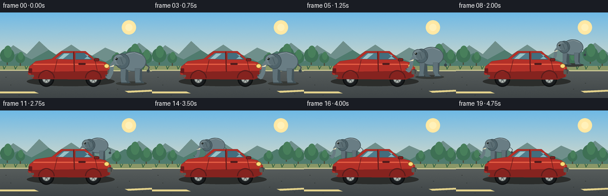

CODING AGENTS AS PIXEL WORLD MODELS
traex/GPT-5.6-Sol · dynamic_spatial_relationship_0064
点击播放 · 原生 RGB 像素
逐轮保存的候选
回放视频、检查图与代码变化。
每份候选均可单独播放。实际图片检查记录在下方工具轨迹中。
候选 01播放与检查图
点击播放 · 原生 RGB 像素

展开代码变化
--- 上一保存版本 +++ 本次保存版本 @@ -0,0 +1,172 @@ +from pathlib import Path +import math +import numpy as np +from PIL import Image, ImageDraw +import artifact_io + +W, H, N, SS = 256, 144, 20, 4 +rng = np.random.default_rng(6401) + +def sc(v): return int(round(v*SS)) +def box(b): return tuple(sc(v) for v in b) +def pts(p): return [(sc(x),sc(y)) for x,y in p] + +def ellipse(d,b,fill,outline=None,width=1): d.ellipse(box(b), fill=fill, outline=outline, width=sc(width) if outline else 1) +def polygon(d,p,fill,outline=None): d.polygon(pts(p),fill=fill,outline=outline) +def line(d,p,fill,width=1,joint='curve'): d.line(pts(p),fill=fill,width=sc(width),joint=joint) +def rr(d,b,r,fill,outline=None,width=1): d.rounded_rectangle(box(b),radius=sc(r),fill=fill,outline=outline,width=sc(width)) + +def lerp(a,b,t): return a+(b-a)*t +def smooth(t): return t*t*(3-2*t) + +def make_background(frame): + h,w=H*SS,W*SS + yy=np.arange(h)[:,None]/SS + # luminous late-afternoon sky and road, all generated mathematically + arr=np.empty((h,w,3),dtype=np.float32) + sky=np.clip(yy/94,0,1) + arr[:,:,0]=lerp(111,217,sky) + arr[:,:,1]=lerp(185,220,sky) + arr[:,:,2]=lerp(229,202,sky) + road=yy>=94 + road_t=np.clip((yy-94)/50,0,1) + for c,(a,b) in enumerate([(89,62),(95,68),(94,70)]): arr[:,:,c]=np.where(road,lerp(a,b,road_t),arr[:,:,c]) + noise=rng.normal(0,0.65,(h,w,1)) + arr=np.clip(arr+noise,0,255).astype(np.uint8) + im=Image.fromarray(arr,'RGB'); d=ImageDraw.Draw(im) + # sun haze + ellipse(d,(205,13,229,37),(255,232,164)); ellipse(d,(211,19,223,31),(255,241,186)) + # far mountains and tree line + polygon(d,[(0,76),(22,55),(45,70),(66,48),(92,72),(120,54),(151,75),(177,59),(207,72),(234,51),(256,68),(256,96),(0,96)],(111,143,139)) + polygon(d,[(0,82),(30,68),(53,79),(82,63),(112,82),(147,69),(178,83),(210,65),(256,79),(256,98),(0,98)],(80,123,110)) + # trees and shrubs + for x,y,r in [(12,72,12),(34,77,8),(226,70,13),(246,76,10),(196,78,8)]: + line(d,[(x,77),(x,y+16)],(75,76,57),2) + ellipse(d,(x-r,y-r,x+r,y+r),(62,112,84)); ellipse(d,(x-r*.45,y-r*1.35,x+r*.65,y+r*.35),(72,127,91)) + # road verge + polygon(d,[(0,90),(256,90),(256,99),(0,98)],(138,151,103)) + line(d,[(0,97),(256,98)],(208,203,150),2) + # perspective road marks + polygon(d,[(0,133),(58,133),(65,136),(0,136)],(227,210,140)) + polygon(d,[(210,132),(256,130),(256,133),(216,135)],(227,210,140)) + # small grass tufts + for x in [7,26,44,204,219,241]: + line(d,[(x,96),(x-2,90),(x,95),(x+3,90)],(48,96,65),1) + return im + +def draw_elephant(im, x, ground, scale, phase, behind=False, moving=True): + d=ImageDraw.Draw(im) + def P(px,py): return (x+px*scale, ground+py*scale) + def B(x0,y0,x1,y1): + a=P(x0,y0); b=P(x1,y1); return (a[0],a[1],b[0],b[1]) + bob=(math.sin(phase*2*math.pi)*1.2 if moving else 0)*scale + # soft contact shadow + ellipse(d,(x-27*scale,ground-3*scale,x+25*scale,ground+4*scale),(54,57,54)) + # tail behind body + line(d,[P(20,-35+bob),P(29,-27+bob),P(27,-21+bob)],(71,84,90),max(1,int(2*scale))) + ellipse(d,B(25,-23+bob,30,-18+bob),(55,69,75)) + # legs, opposite pairs swing in alternating gait + swing=math.sin(phase*2*math.pi)*5 if moving else 0 + leg_col=(95,113,120); dark=(68,83,89) + # far legs + for lx,sgn in [(-9,-1),(14,1)]: + foot=sgn*swing + polygon(d,[P(lx-5,-24+bob),P(lx+3,-24+bob),P(lx+3+foot*.35,-5),P(lx+7+foot,0),P(lx-3+foot,0),P(lx-5,-10)],dark) + # body + ellipse(d,B(-20,-53+bob,24,-20+bob),(105,125,132),outline=(69,86,92),width=max(1,int(1.2*scale))) + # subtle back highlight + line(d,[P(-12,-48+bob),P(4,-52+bob),P(17,-47+bob)],(141,157,161),max(1,int(1.2*scale))) + # near legs + for lx,sgn in [(-14,1),(10,-1)]: + foot=sgn*swing + polygon(d,[P(lx-5,-25+bob),P(lx+4,-25+bob),P(lx+3+foot*.35,-6),P(lx+7+foot,0),P(lx-4+foot,0),P(lx-5,-10)],leg_col,outline=(67,82,88)) + line(d,[P(lx-4+foot,-1),P(lx+7+foot,-1)],(53,66,71),max(1,int(scale))) + # head on left: large ear then face + ellipse(d,B(-28,-50+bob,-4,-24+bob),(79,99,106),outline=(62,77,83),width=max(1,int(scale))) + ellipse(d,B(-32,-49+bob,-12,-29+bob),(113,132,138),outline=(67,83,89),width=max(1,int(scale))) + # ear inner fan + ellipse(d,B(-26,-45+bob,-10,-30+bob),(91,110,116)) + line(d,[P(-19,-43+bob),P(-15,-32+bob)],(72,89,95),max(1,int(scale))) + # trunk curls down and slightly forward + trunk=[P(-29,-36+bob),P(-34,-29+bob),P(-35,-18+bob),P(-39,-10+bob),P(-43,-13+bob)] + line(d,trunk,(104,124,130),max(2,int(7*scale))) + line(d,[P(-42,-12+bob),P(-45,-14+bob)],(62,78,84),max(1,int(2*scale))) + # tusk and face + polygon(d,[P(-30,-31+bob),P(-39,-27+bob),P(-31,-28+bob)],(242,229,190)) + ellipse(d,B(-28,-43+bob,-24,-39+bob),(24,31,31)) + ellipse(d,B(-27.4,-42.5+bob,-26.2,-41.3+bob),(240,236,211)) + # ear flap variation makes life visible + if moving: + line(d,[P(-10,-45+bob),P(-7-math.sin(phase*2*math.pi)*2,-32+bob)],(64,80,85),max(1,int(scale))) + +def draw_car(im): + d=ImageDraw.Draw(im) + # broad shadow grounds the stationary car + ellipse(d,(45,108,193,124),(43,45,43)) + # tires and rims (rear left, front right) + for cx in (78,157): + ellipse(d,(cx-13,99,cx+13,125),(25,28,30),outline=(13,15,16),width=2) + ellipse(d,(cx-7,105,cx+7,119),(172,178,173),outline=(76,82,82),width=1) + ellipse(d,(cx-2,110,cx+2,114),(55,60,62)) + for a in range(0,360,60): + rad=math.radians(a); line(d,[(cx,112),(cx+6*math.cos(rad),112+6*math.sin(rad))],(90,98,97),1) + # red body, clearly front-facing right + polygon(d,[(49,91),(60,82),(87,78),(103,65),(144,65),(161,80),(178,84),(187,93),(185,108),(174,112),(55,111),(47,103)],(179,48,40),outline=(91,29,27)) + # lower rocker and highlights + polygon(d,[(50,100),(184,98),(184,108),(171,113),(57,112)],(133,35,31)) + line(d,[(56,87),(174,87),(183,94)],(230,94,69),2) + # windows / cabin + polygon(d,[(93,78),(106,68),(123,68),(123,79)],(80,124,139),outline=(37,66,75)) + polygon(d,[(127,68),(142,68),(156,79),(127,79)],(67,109,125),outline=(37,66,75)) + # sky glint in windows + polygon(d,[(108,69),(117,69),(106,78),(98,78)],(153,194,198)) + polygon(d,[(143,70),(152,78),(142,78),(149,72)],(131,180,188)) + # pillars and doors + line(d,[(124,66),(125,100)],(104,31,29),2) + line(d,[(96,80),(91,101)],(109,31,29),1) + line(d,[(160,81),(164,100)],(109,31,29),1) + rr(d,(132,85,144,88),1,(80,27,27)) + # bumpers, lights and front grille identify direction + rr(d,(181,96,190,104),2,(89,91,87)); ellipse(d,(175,86,184,94),(255,218,120),outline=(151,91,38)) + rr(d,(48,94,54,102),1,(103,27,28)); rr(d,(46,105,57,109),1,(88,88,83)) + line(d,[(184,96),(187,96),(187,103)],(50,53,52),1) + # wheel arch outlines on top of body + for cx in (78,157): + d.arc(box((cx-14,97,cx+14,124)),180,360,fill=(92,28,27),width=sc(2)) + # wing mirror + rr(d,(158,77,167,82),2,(126,35,32),outline=(80,26,25)) + +def elephant_state(i): + # Establish the initial right-hand relationship for a full second. + if i <= 3: + return 222.0, 119.0, 1.0, False + # First step away from camera, around the car's front, before crossing behind it. + if i <= 8: + t=smooth((i-3)/5) + return lerp(222,195,t), lerp(119,88,t), lerp(1.0,.80,t), True + # Walk left across the far side, finishing behind the car's rear. + if i <= 17: + t=smooth((i-8)/9) + return lerp(195,73,t), lerp(88,86,t), lerp(.80,.76,t), True + return 73.0,86.0,.76,False + +def make_frame(i): + im=make_background(i) + x,y,s,moving=elephant_state(i) + phase=(i-3)*0.31 + # Once it recedes, elephant is correctly occluded by the car: explicit depth transition. + behind = i >= 7 + if behind: + draw_elephant(im,x,y,s,phase,behind=True,moving=moving) + draw_car(im) + else: + draw_car(im) + draw_elephant(im,x,y,s,phase,behind=False,moving=moving) + # tiny foreground road pebbles add depth without distracting + d=ImageDraw.Draw(im) + for px,py in [(18,122),(32,139),(218,119),(240,137),(198,129),(10,109)]: + ellipse(d,(px-1,py-0.5,px+1,py+0.5),(52,57,56)) + return np.asarray(im.resize((W,H),Image.Resampling.LANCZOS),dtype=np.uint8) + +frames=np.stack([make_frame(i) for i in range(N)],axis=0) +artifact_io.save(frames,Path(__file__).resolve().parent)
候选 02播放与检查图
点击播放 · 原生 RGB 像素

展开代码变化
--- 上一保存版本
+++ 本次保存版本
@@ -5,7 +5,6 @@
import artifact_io
W, H, N, SS = 256, 144, 20, 4
-rng = np.random.default_rng(6401)
def sc(v): return int(round(v*SS))
def box(b): return tuple(sc(v) for v in b)
@@ -31,9 +30,10 @@
road=yy>=94
road_t=np.clip((yy-94)/50,0,1)
for c,(a,b) in enumerate([(89,62),(95,68),(94,70)]): arr[:,:,c]=np.where(road,lerp(a,b,road_t),arr[:,:,c])
- noise=rng.normal(0,0.65,(h,w,1))
+ # Fixed fine grain keeps the painted surface tactile without temporal flicker.
+ noise=np.random.default_rng(6401).normal(0,0.65,(h,w,1))
arr=np.clip(arr+noise,0,255).astype(np.uint8)
- im=Image.fromarray(arr,'RGB'); d=ImageDraw.Draw(im)
+ im=Image.fromarray(arr); d=ImageDraw.Draw(im)
# sun haze
ellipse(d,(205,13,229,37),(255,232,164)); ellipse(d,(211,19,223,31),(255,241,186))
# far mountains and tree line
候选 03播放与检查图
可观测工具轨迹
实际执行的命令与返回图片。
命令 1exit 0
/bin/bash -lc "cat prompt.txt && printf '\\n---RULES---\\n' && cat GENERATION_RULES.md && printf '\\n---SPEC---\\n' && cat task_spec.json"
命令 2exit 0
/bin/bash -lc "find . -maxdepth 2 -type f -printf '%p\\n' | sort"
命令 3exit 0
/bin/bash -lc 'cat artifact_io.py'
命令 4exit 0
/bin/bash -lc "cat > generate.py <<'PY'
from pathlib import Path
import math
import numpy as np
from PIL import Image, ImageDraw
import artifact_io
W, H, N, SS = 256, 144, 20, 4
rng = np.random.default_rng(6401)
def sc(v): return int(round(v*SS))
def box(b): return tuple(sc(v) for v in b)
def pts(p): return [(sc(x),sc(y)) for x,y in p]
def ellipse(d,b,fill,outline=None,width=1): d.ellipse(box(b), fill=fill, outline=outline, width=sc(width) if outline else 1)
def polygon(d,p,fill,outline=None): d.polygon(pts(p),fill=fill,outline=outline)
def line(d,p,fill,width=1,joint='curve'): d.line(pts(p),fill=fill,width=sc(width),joint=joint)
def rr(d,b,r,fill,outline=None,width=1): d.rounded_rectangle(box(b),radius=sc(r),fill=fill,outline=outline,width=sc(width))
def lerp(a,b,t): return a+(b-a)*t
def smooth(t): return t*t*(3-2*t)
def make_background(frame):
h,w=H*SS,W*SS
yy=np.arange(h)[:,None]/SS
# luminous late-afternoon sky and road, all generated mathematically
arr=np.empty((h,w,3),dtype=np.float32)
sky=np.clip(yy/94,0,1)
arr[:,:,0]=lerp(111,217,sky)
arr[:,:,1]=lerp(185,220,sky)
arr[:,:,2]=lerp(229,202,sky)
road=yy>=94
road_t=np.clip((yy-94)/50,0,1)
for c,(a,b) in enumerate([(89,62),(95,68),(94,70)]): arr[:,:,c]=np.where(road,lerp(a,b,road_t),arr[:,:,c])
noise=rng.normal(0,0.65,(h,w,1))
arr=np.clip(arr+noise,0,255).astype(np.uint8)
im=Image.fromarray(arr,'RGB'); d=ImageDraw.Draw(im)
# sun haze
ellipse(d,(205,13,229,37),(255,232,164)); ellipse(d,(211,19,223,31),(255,241,186))
# far mountains and tree line
polygon(d,[(0,76),(22,55),(45,70),(66,48),(92,72),(120,54),(151,75),(177,59),(207,72),(234,51),(256,68),(256,96),(0,96)],(111,143,139))
polygon(d,[(0,82),(30,68),(53,79),(82,63),(112,82),(147,69),(178,83),(210,65),(256,79),(256,98),(0,98)],(80,123,110))
# trees and shrubs
for x,y,r in [(12,72,12),(34,77,8),(226,70,13),(246,76,10),(196,78,8)]:
line(d,[(x,77),(x,y+16)],(75,76,57),2)
ellipse(d,(x-r,y-r,x+r,y+r),(62,112,84)); ellipse(d,(x-r*.45,y-r*1.35,x+r*.65,y+r*.35),(72,127,91))
# road verge
polygon(d,[(0,90),(256,90),(256,99),(0,98)],(138,151,103))
line(d,[(0,97),(256,98)],(208,203,150),2)
# perspective road marks
polygon(d,[(0,133),(58,133),(65,136),(0,136)],(227,210,140))
polygon(d,[(210,132),(256,130),(256,133),(216,135)],(227,210,140))
# small grass tufts
for x in [7,26,44,204,219,241]:
line(d,[(x,96),(x-2,90),(x,95),(x+3,90)],(48,96,65),1)
return im
def draw_elephant(im, x, ground, scale, phase, behind=False, moving=True):
d=ImageDraw.Draw(im)
def P(px,py): return (x+px*scale, ground+py*scale)
def B(x0,y0,x1,y1):
a=P(x0,y0); b=P(x1,y1); return (a[0],a[1],b[0],b[1])
bob=(math.sin(phase*2*math.pi)*1.2 if moving else 0)*scale
# soft contact shadow
ellipse(d,(x-27*scale,ground-3*scale,x+25*scale,ground+4*scale),(54,57,54))
# tail behind body
line(d,[P(20,-35+bob),P(29,-27+bob),P(27,-21+bob)],(71,84,90),max(1,int(2*scale)))
ellipse(d,B(25,-23+bob,30,-18+bob),(55,69,75))
# legs, opposite pairs swing in alternating gait
swing=math.sin(phase*2*math.pi)*5 if moving else 0
leg_col=(95,113,120); dark=(68,83,89)
# far legs
for lx,sgn in [(-9,-1),(14,1)]:
foot=sgn*swing
polygon(d,[P(lx-5,-24+bob),P(lx+3,-24+bob),P(lx+3+foot*.35,-5),P(lx+7+foot,0),P(lx-3+foot,0),P(lx-5,-10)],dark)
# body
ellipse(d,B(-20,-53+bob,24,-20+bob),(105,125,132),outline=(69,86,92),width=max(1,int(1.2*scale)))
# subtle back highlight
line(d,[P(-12,-48+bob),P(4,-52+bob),P(17,-47+bob)],(141,157,161),max(1,int(1.2*scale)))
# near legs
for lx,sgn in [(-14,1),(10,-1)]:
foot=sgn*swing
polygon(d,[P(lx-5,-25+bob),P(lx+4,-25+bob),P(lx+3+foot*.35,-6),P(lx+7+foot,0),P(lx-4+foot,0),P(lx-5,-10)],leg_col,outline=(67,82,88))
line(d,[P(lx-4+foot,-1),P(lx+7+foot,-1)],(53,66,71),max(1,int(scale)))
# head on left: large ear then face
ellipse(d,B(-28,-50+bob,-4,-24+bob),(79,99,106),outline=(62,77,83),width=max(1,int(scale)))
ellipse(d,B(-32,-49+bob,-12,-29+bob),(113,132,138),outline=(67,83,89),width=max(1,int(scale)))
# ear inner fan
ellipse(d,B(-26,-45+bob,-10,-30+bob),(91,110,116))
line(d,[P(-19,-43+bob),P(-15,-32+bob)],(72,89,95),max(1,int(scale)))
# trunk curls down and slightly forward
trunk=[P(-29,-36+bob),P(-34,-29+bob),P(-35,-18+bob),P(-39,-10+bob),P(-43,-13+bob)]
line(d,trunk,(104,124,130),max(2,int(7*scale)))
line(d,[P(-42,-12+bob),P(-45,-14+bob)],(62,78,84),max(1,int(2*scale)))
# tusk and face
polygon(d,[P(-30,-31+bob),P(-39,-27+bob),P(-31,-28+bob)],(242,229,190))
ellipse(d,B(-28,-43+bob,-24,-39+bob),(24,31,31))
ellipse(d,B(-27.4,-42.5+bob,-26.2,-41.3+bob),(240,236,211))
# ear flap variation makes life visible
if moving:
line(d,[P(-10,-45+bob),P(-7-math.sin(phase*2*math.pi)*2,-32+bob)],(64,80,85),max(1,int(scale)))
def draw_car(im):
d=ImageDraw.Draw(im)
# broad shadow grounds the stationary car
ellipse(d,(45,108,193,124),(43,45,43))
# tires and rims (rear left, front right)
for cx in (78,157):
ellipse(d,(cx-13,99,cx+13,125),(25,28,30),outline=(13,15,16),width=2)
ellipse(d,(cx-7,105,cx+7,119),(172,178,173),outline=(76,82,82),width=1)
ellipse(d,(cx-2,110,cx+2,114),(55,60,62))
for a in range(0,360,60):
rad=math.radians(a); line(d,[(cx,112),(cx+6*math.cos(rad),112+6*math.sin(rad))],(90,98,97),1)
# red body, clearly front-facing right
polygon(d,[(49,91),(60,82),(87,78),(103,65),(144,65),(161,80),(178,84),(187,93),(185,108),(174,112),(55,111),(47,103)],(179,48,40),outline=(91,29,27))
# lower rocker and highlights
polygon(d,[(50,100),(184,98),(184,108),(171,113),(57,112)],(133,35,31))
line(d,[(56,87),(174,87),(183,94)],(230,94,69),2)
# windows / cabin
polygon(d,[(93,78),(106,68),(123,68),(123,79)],(80,124,139),outline=(37,66,75))
polygon(d,[(127,68),(142,68),(156,79),(127,79)],(67,109,125),outline=(37,66,75))
# sky glint in windows
polygon(d,[(108,69),(117,69),(106,78),(98,78)],(153,194,198))
polygon(d,[(143,70),(152,78),(142,78),(149,72)],(131,180,188))
# pillars and doors
line(d,[(124,66),(125,100)],(104,31,29),2)
line(d,[(96,80),(91,101)],(109,31,29),1)
line(d,[(160,81),(164,100)],(109,31,29),1)
rr(d,(132,85,144,88),1,(80,27,27))
# bumpers, lights and front grille identify direction
rr(d,(181,96,190,104),2,(89,91,87)); ellipse(d,(175,86,184,94),(255,218,120),outline=(151,91,38))
rr(d,(48,94,54,102),1,(103,27,28)); rr(d,(46,105,57,109),1,(88,88,83))
line(d,[(184,96),(187,96),(187,103)],(50,53,52),1)
# wheel arch outlines on top of body
for cx in (78,157):
d.arc(box((cx-14,97,cx+14,124)),180,360,fill=(92,28,27),width=sc(2))
# wing mirror
rr(d,(158,77,167,82),2,(126,35,32),outline=(80,26,25))
def elephant_state(i):
# Establish the initial right-hand relationship for a full second.
if i <= 3:
return 222.0, 119.0, 1.0, False
# First step away from camera, around the car's front, before crossing behind it.
if i <= 8:
t=smooth((i-3)/5)
return lerp(222,195,t), lerp(119,88,t), lerp(1.0,.80,t), True
# Walk left across the far side, finishing behind the car's rear.
if i <= 17:
t=smooth((i-8)/9)
return lerp(195,73,t), lerp(88,86,t), lerp(.80,.76,t), True
return 73.0,86.0,.76,False
def make_frame(i):
im=make_background(i)
x,y,s,moving=elephant_state(i)
phase=(i-3)*0.31
# Once it recedes, elephant is correctly occluded by the car: explicit depth transition.
behind = i >= 7
if behind:
draw_elephant(im,x,y,s,phase,behind=True,moving=moving)
draw_car(im)
else:
draw_car(im)
draw_elephant(im,x,y,s,phase,behind=False,moving=moving)
# tiny foreground road pebbles add depth without distracting
d=ImageDraw.Draw(im)
for px,py in [(18,122),(32,139),(218,119),(240,137),(198,129),(10,109)]:
ellipse(d,(px-1,py-0.5,px+1,py+0.5),(52,57,56))
return np.asarray(im.resize((W,H),Image.Resampling.LANCZOS),dtype=np.uint8)
frames=np.stack([make_frame(i) for i in range(N)],axis=0)
artifact_io.save(frames,Path(__file__).resolve().parent)
PY
python generate.py
ls -lh pixels.npz inspection.png index.html"命令 5exit 0
/bin/bash -lc "python generate.py && python - <<'PY'
import numpy as np
z=np.load('pixels.npz')['pixels']
print('packed artifact:',z.shape,z.dtype,'frames differ:',[(i,int(np.count_nonzero(z[:,:,i]"'!=z[:,:,i-1]))) for i in range(1,20)])
from PIL import Image
for i in [0,3,5,8,11,14,17,19]:
im=Image.open(f'"'frames/{i:02d}.png'); print(i,im.mode,im.size)
PY"视觉工具实际返回图片 1

保存候选 3 份；完成命令 5 次；可验证图片返回 1 张。原始 API 响应与完整日志保留在本地。